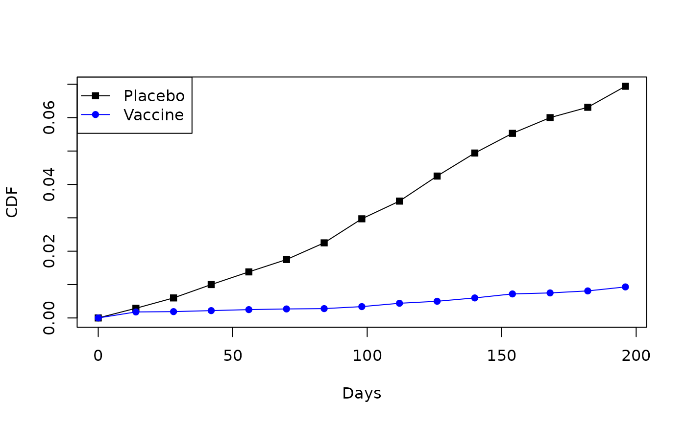

Marginalized-Weibull-Inverse Gaussian
lambda.Rmd
library(mpw)
## This data resembles that in Thomas et al
time<- c(0,14,28,42,56,70,84,98,112,126,140,154,168,182,196)
F1 <- c(0,.18,.19,.22,.25,.27,.28,.34,.44,.50,.60,.72,.75,.81,.93)/100
F0 <- c(0,.29,.60,1,1.38,1.75,2.25,2.97,3.50,4.25,4.94,5.53,6.00,6.31,6.94)/100
## plot the data points,
## with interpolated lines
plot (time, F0, type="l", col="black", xlab="Days", ylab="CDF")
points(time, F0, col="black", pch=15)
lines (time, F1, col="blue")
points(time, F1, col="blue", pch=16)
legend("topleft", c("Placebo", "Vaccine"),
col=c("black","blue"),
lty=1,
pch=c(15,16)
)